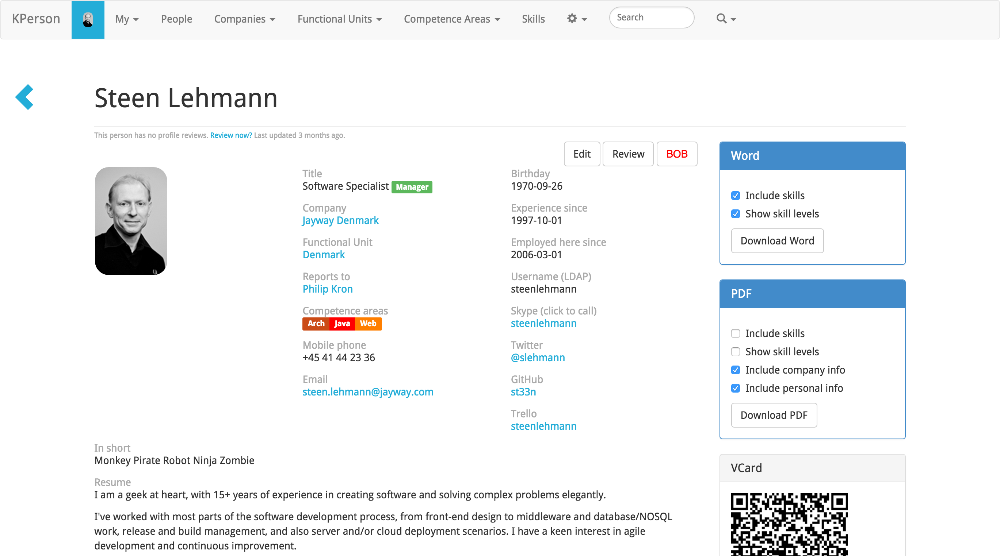
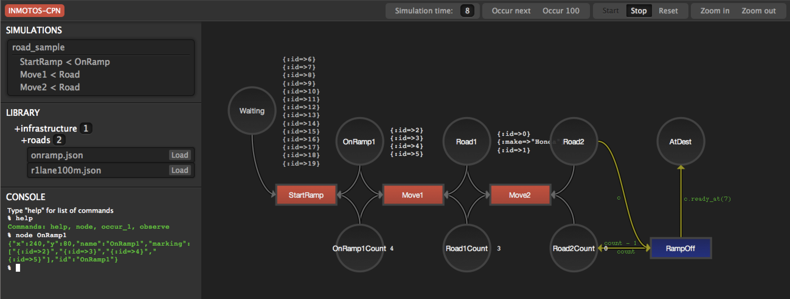

Curriculum Vitae
Steen Lehmann
Who am I?
I’m a CTO and Software Specialist for the Danish branch of Jayway, which employs some of the best software developers in the industry. We consult on all aspects of software development, and are owned 100% by the employees.
Since first discovering computers in the mid 1980s as a kid, I’ve been writing code in multiple platforms and languages. In the 90s I studied both computer science and human-computer interaction, enabling me to design and build things that are elegant and simple, inside and out.
I take a keen interest in agile/lean ways of working, how teams perform, information and interaction design, software architecture, operations, and much more. Shortening the feedback loop, on all levels, evolving and molding systems until they solve the right problems for the right people, and no more.
I’m responsible for technical interviews when we recruit sociable geeks.
I’ve been a speaker (and am part of the program committee) for Øredev, the largest developer conference in the Copenhagen-Malmö area, most recently in 2013 on making enterprise apps more fun and enjoyable, using UX conventions from touch interfaces and information design.
First and foremost I am a geek at heart, enjoying creating software that is both useful for people, and structured in a clear way.
The work I most enjoy is building delightful web applications that enable users to create or discover something new, by visualizing information in dynamic and novel ways. Due to my humanities background I can pull in inspiration from many different fields like the visual arts, and thanks to my geeky technical side I can then build everything myself.
Employments
CTO & Software Specialist
Since being employed in 2006 as the first Danish employee, I’ve done consulting on most areas of software development and architecture. I do technical interviewing for potential hires, help arrange our conference Øredev, and try to keep up-to-date on contemporary technology.
Some of the clients I’ve worked for during my years at Jayway include:
- Sony Ericsson (Xperia Lounge Voucher Server - Java architect)
- TrueSec (Java architect/developer)
- Cloudfinder
- 3 (3Switch)
- Politiken (Release Management, front-end development)
- Polfoto (front-end and back-end development)
- Ekstra Bladet (EKSTRA, eBladet - front+back-end development)
- WATCHME (EU Project, http://www.project-watchme.eu/)
- INMOTOS (EU Project through AmanziTel, see later)
- BoB / KPerson (internal tools for resource planning at Jayway)
- European Communications Office
Software Engineer Consultant
Although I joined the small startup Wapportal in 2000, back when WAP was the next big thing for mobile, we soon found ourselves engulfed by first SilverStream Software, and then a year later by Novell. This was around the time Novell acquired lots of interesting companies like SuSE Linux and Ximian Desktop. We ended up a sort of skunk works, mostly building XML-based Eclipse tooling products for Novell’s line of identity management products. I ended up having implemented, among other things, the XML Schema standard, for use in an innovative XML editor. Our Danish development office was finally shut down in late 2005.
Applications Consultant
My first job was with TIBCO, where I spent most of my time at Danske Bank HQ in Holmens Kanal, developing market data displays for traders, and supporting their TIBCO message bus installation. It was an intense experience at times, where I learned to think on my feet. I became friendly with the principles of real-time information display to support challenging business requirements, and UNIX command-line tools. I helped manage servers spread over more than 20 sites, performing upgrades and diagnosing networking issues.
For 4 months in 1999 I worked on-site on a project in Zürich for Credit Suisse Private Banking, where I supported the back-end system for youtrade.ch, an online trading system for private customers in Switzerland. I was a key part of the TIBCO support team, responsible for keeping the system running 24/7, and performing upgrades at pre-scheduled times in the night.
Waiman Tsui was the project manager:
"Steen was a key member of a project team at CSPB. He made major contributions towards the successful completion of a Trading System project. He worked professionally & diligently, always ensuring that his output met client expectations. He was strong at identifying potential problems, offering ideas to improve the system. He has a pleasant demeanour which makes it easy for him to fit into any team"
Education
B.A.
I studied Computer Science at Århus University for 3 years before switching majors to Information Science, a humanist approach to computing. This has given me a solid background in core computer science, as well as an understanding of the human factors in computing. I reached the point where I could start my Master’s Thesis, but instead decided to start my first job.
Selected experiences
This section highlights some of the more visual projects I’ve been a part of.
KPerson
Competence database for Jayway.

KPerson, an internal tool at Jayway, was built in 2008 by me and a couple of other consultants at Jayway as a Rails 2 application, then maintained and upgraded by me over the next 7 years. It is now a Rails 4 application based on the Bootstrap CSS library, making it responsive for phone and tablet use.
KPerson is a database of each consultant’s background and skills. Consultants are required to update their skills and experiences, and our sales people use the information to search for consultants suitable for incoming assignments, then automatically generate and download PDF resumes in the correct format.
INMOTOS
Interdependency Modelling Tools and Simulation Based Risk Assessment of ICT Critical Infrastructures Contingency Plans

For the INMOTOS project, I was tasked with converting a large number of requirements and specifications into a working prototype able to simulate complex infrastructure such as power plants and pipelines. I decided to use Coloured Petri-Nets, a visual programming and modelling tool, creating an implementation in Ruby Open sourced in 2012. The simulation front-end was a JavaScript application which used websockets to display a live view of the simulation in-browser, complete with development tools. It used the Raphäel library to display SVG-based graphics Demonstration video at https://www.youtube.com/watch?v=riLWVf_3BOQ.
Conclusion
As is clearly apparent from the graph below, I have improved constantly since starting my professional career in 1997. I am now able to tacke problems in a few days that would have taken me weeks fresh out of university. Due to my extensive experience with different technologies, I can design user interfaces, evaluate and use new JavaScript frameworks and libraries at roughly the rate at which they are produced, build server-side APIs and deploy them on cloud based infrastructure, and much more.
Contact
Email is firstname dot lastname at gmail.com.
I tweet at @slehmann
I GitHub at @st33n
I Instagram at @st33n